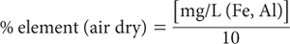

Citrate/dithionite reacts with secondary iron oxides including oxyhydroxides and the fractions extracted by pyrophosphate and acid oxalate. Amounts of Al extracted usually approximate that removed by acid oxalate. Exceptions are some podzols and soils derived from volcanic ash, where acid oxalate extracts more Al than does citrate-dithionite.
The method is adapted from Holmgren (1967) and Blakemore et al. (1987).
22% Sodium Citrate Solution
Dissolve 220 g sodium citrate (Na3C6H5O7.2H2O) in deionised water and dilute to 1.0 L. Prepare on the day required.
Sodium Dithionite
Use sodium dithionite (Na2S2O4+H2O; tech) as a solid.
Superfloc Solution
As for Method 13B1.
Combined Fe and Al (and Si) Primary Standard
As for Method 13A1.
Combined Fe and Al (and Si) Working Standards
Dispense 0, 2.5, 5.0, 12.5, 25.0, 37.5 and 50.0 mL combined Fe and Al Primary Standard into 500 mL volumetric flasks. To each add 50 mL 22% Sodium Citrate solution and 1.0 g Sodium Dithionite, mix well, and make to volume with deionised water. These solutions contain 0–100 mg/L of Fe, Al (and Si). For a 1:50 soil/solution ratio, a subsequent addition of 50 mL water to sample extracts only, and a further 1+9 dilution of the sample extracts only, soil concentrations are 0, 1.0, 2.5, 5.0, 7.5 and 10% Fe and Al (and Si), respectively.
Shake 1.0 g air-dry soil (<0.5 mm) with 50 mL 22% Sodium Citrate and 1.0 g Sodium Dithionite on an end-over-end shaker continuously for 16 h at 25°C. Accurately add 50 mL deionised water containing 5 drops of Superfloc solution, shake vigorously for 5 sec, and centrifuge or filter to obtain extracts free of fine soil particles. Dilute these already diluted extracts 1+9 with deionised water and leave loosely stoppered in a cool place for at least 2 days. Include a reagent blank throughout.
Using undiluted working standards and clear soil extracts (diluted as above), read values of Fe and Al by ICPAES (preferred) or by AAS, and determine concentrations in mg/L of Fe and Al from separate calibration curves (or regression equations). Significant background interference is likely with FES. Apply a method (blank) correction.
For an initial 1:50 soil/solution ratio, an additional 50 mL dilution, followed by a final 1+9 dilution of extracts – but no dilution of working standards:

Report citrate/dithionite-extractable element (Fe, Al) (%) on an oven-dry basis. Use the air-dry moisture to oven-dry moisture ratio to convert to an oven-dry concentration. Refer to Method 2A1 for guidance with regard to this soil moisture calculation.